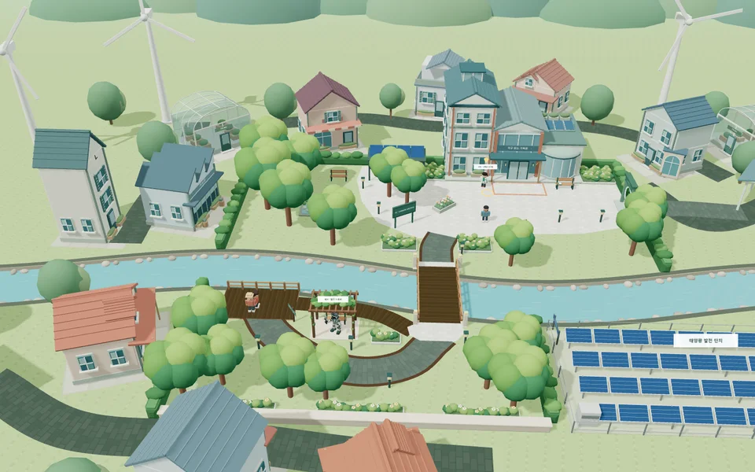

왜 넷제로가 필요할까?
자료에서 도시의 과제를 찾습니다.

1번 프로그램 · 50분 × 4차시
탄소배출 자료를 읽고 도시 정책을 비교합니다. 건물 에너지 실험을 거쳐, 근거와 조건을 갖춘 도시 설계를 제안합니다.
탄소와 에너지 · 도시 정책 · 비교 실험 · 설계 검증
자료에서 도시의 과제를 찾습니다.
정책의 효과와 적용 조건을 비교합니다.
한 조건만 바꾸어 두 실험을 비교합니다.
정책 조합의 장단점을 설명하고 설계를 고칩니다.
차시별 탐구·맵 링크는 교사가 살펴보는 발표 모드입니다. 기록은 임시 저장됩니다. 학생은 ‘학생 학습공간 열기’로 접속해 주세요.

2번 프로그램 · 50분 × 4차시
생명 기록의 이상 구간을 조사하고 지질시대의 시간과 화석 표본을 살펴봅니다. 관찰과 추론을 구분하며 과거 환경을 설명합니다.
대멸종 · 지질시대 · 화석 관찰 · 환경 복원
그래프의 감소 구간과 가능한 설명을 살핍니다.
시간의 비율을 복구하고 화석의 단서를 분류합니다.
보이는 특징과 복원한 설명을 구별합니다.
환경 변화와 생물 변화를 증거로 연결합니다.
차시별 탐구·맵 링크는 교사가 살펴보는 발표 모드입니다. 기록은 임시 저장됩니다. 학생은 ‘학생 학습공간 열기’로 접속해 주세요.
수업의 목적을 먼저 살펴보고, 기기와 기록 제출 방법을 준비해 주세요.
학생이 무엇을 조사하고, 어떤 근거로 설명하는 수업인지 소개합니다.
준비 점검표, 차시별 진행, 기록 보관·제출, 문제 해결 안내를 제공합니다.
차시별 선택과 분기 이야기, 비용·접근성 조건을 수업에 활용하는 방법입니다.
공개판의 탐구 코치는 미리 작성된 질문을 제공합니다. 생성형 AI 대화와 학급 기록 자동 수집은 아직 연결되어 있지 않습니다.